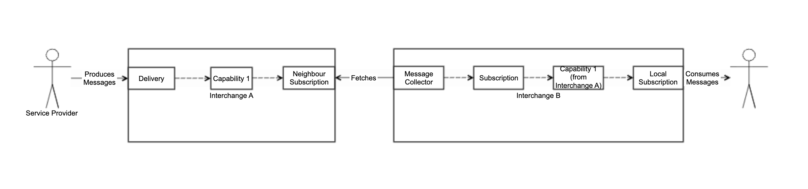
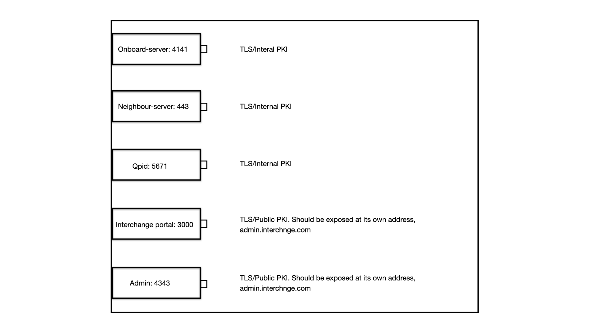

Architecture
Central Concepts
Learn more about key concepts in the Glossary, where you can find definitions and explanations of important terms.
Discovery
Membership in the network is determined by an Owning Domain, which is a domain listed in DNS. A node looks up the well-known Owning Domain in DNS, and finds all the participating nodes are listed in that domain as SRV records. It is up to each Node to communicate with all the other nodes in the network, and to exclude any other node that is not listed in the DNS.
Control Plane
The nodes communicate over HTTPS, using client certificates stemming from a well-known root CA to ensure two-way trust. Nodes announce the data they can supply in the form of Capabilities, and the data they wish to receive in the form of Subscriptions. When a subscription from one node is found to match a capability of another node, a data channel is established, and the subscribing node can read messages from this channel.
An example flow of messages being produced by one service provider on Interchange A, and consumed by a Service Provider on Interchange B is described below.

Local Actor Plane
Local Actors (ie the users of the system), can request to add Capabilities and Subscriptions to the system, and to deliver data over a Delivery. A Local Actor API is provided for the actors to be able to negotiate subscriptions, capabilities and deliveries, and to find the AMQP endpoints to read from or write to.
Message Plane
Messages are typically sent by a Local Actor with a Capability and a matching Delivery over an AMQP endpoint. The broker has the responsibility to route messages to any subscribing party, either another Actor on the same broker/node, or to other brokers/nodes that has matching subscriptions. Messages are typically consumed by a Local Actor with a Subscription matching a Capability either on the same broker/node, or on other brokers/nodes that has a subscription that matches the Capability.
Component Architecture
NeighbourServer - Incoming II requests
The Neighbour server accepts HTTPS requests from other nodes in the network. Interchanges use the endpoints that are exposed by NeighbourServer to register capabilities that it has, as well as subscriptions for data.
The Neighbour Server consults the DNS upon requests from new neighbours (using their DNS name and client certificate), and either accepts or rejects the request depending on whether the requesting party is listed in the Owning Domain DNS record. Here you can find information about Neighbour Api:
Neighbour APINeighbourDiscoverer - Outgoing II requests
NeighbourDiscoverer is the other side of the conversation from NeighbourServer. The discoverer pushes info about the state of capabilities and subscriptions to neighbouring interchanges in the same network.
NeighbourDiscoverer routinely consults the DNS for new members in the cluster, and removes any members that the interchange knows, but that is not listed in the DNS record of the Owning Domain.
Routing configurer - Broker control
The routing configurer controls the broker, and sets up queues and exchanges to match the desired system state. It also uses ACLs to allow or deny other interchanges and service providers access to queues and exchanges.
Message Collector - incoming messages
The message collector is essentially a bridge, that fetches messages from a neighbouring interchange, and posts those messages on a local exchange for further routing.
The broker
The AMQPS 1.0 message broker used is currently Qpid Broker-J. Service Providers and Neighbours will be able to connect to queues and exchanges based on their subscriptions or deliveries, and consume or produce messages.
Onboard-server - Service provider
The onboard server is the contact points for Service Provides. This is where a service provider can register capabilities, subscriptions, deliveries and private channels programmatically. Here you can find information about Onboard Api:
Onboard APIPKI structure
A Public Key Infrastructure (PKI) is used to securely manage digital certificates and encryption keys. In the interchange, it helps ensure secure and trusted communication between interchanges and system users.
RoutingConfigurer
It is responsible for configuring queues, exchanges and bindings in the broker.
Service provider client
This is where you will find documentation of the current command-line tools for the Norwegian National Interchange project:
Service provider ClientSystem network
When the system starts, it listens for incoming network requests on configured ports. As shown in the image, these are the default ports on which the services are running.

Frontends
Interchange portal
Interchange Portal is a self-help portal for interchange end-users to manage capabilities, subscriptions, deliveries and private channels. Here you can find the user guide on how to use Interchange portal
Interchange portal userhelp Link to DemoAdmin frontend
Admin frontend is a systems administrator view of the system. It is currently view-only, and intended to aid an administrator to track down problems in the system, and provide enough information for the administrator to be able to remedy the problem.
The administrators can view list of service providers, neighbours, exchanges, queues, biqueues, and graphs. For example, this image shows the interface, where the admin can see the list of neighbours, their last connection status, last failed connection attempt and last updated timestamp. For each neighbour, you can see the number of corresponding capabilities, subscriptions, and neighbour subscriptions. You can click on each row to view the details.

Keycloak
Both Interchange portal and admin frontend are integrated with Keycloak configured with the required realm, users and roles. It is used to authenticate users and obtain access tokens for secure communication. An organization represents a customer organization and can be configured with its own access permissions, roles, and authentication methods. This enables different customer organizations to have separate authentication and authorization settings while sharing the same Keycloak deployment.
Design principles
NeighbourServer, OnboardServer and NeighbourDiscoverer only manipulate data in the database, never broker state directly.
The database state is the single source of truth for the desired system and broker state. On redeployment of the system, only the data for ServiceProviders and PrivateChannels are imported. Data for other interchanges and their capabilities and subscriptions are discovered from the network upon start.
RoutingConfigurer is the only component to change the broker state. The broker state is never assumed, and checked on every job run. RoutingConfigurer manipulate the state of the broker to match the desired state in the database.
Project Structure
Maven
This project uses Apache Maven for build automation and dependency management. All project dependencies and build configurations are defined in the pom.xml file located in the project's root directory.
Key Technologies and Dependencies
These are some of the key technologies and dependencies in this project: **Java 21, Spring Boot, Apache Qpid, JMS Client, Picocli, PostgreSQL Driver, JUnit Jupiter, Swagger/OpenAPI, JavaCC and Testcontainers**.
The Apache Qpid JMS Client is used to enable JMS-based messaging over AMQPS 1.0, allowing the application to send and receive messages through a message broker.
The Picocli library is used to build command-line interfaces and handle parsing of command-line arguments in a structured way. This is used in Service provider client, which is a command-line client designed to interact with the interchange.
The PostgreSQL JDBC driver is used to connect the application to a PostgreSQL database and perform database operations through JDBC.
How to run the interchange
In addition to running the application with [Docker Compose](README.md#run-using-docker-compose), you can also run it directly after building the project. Once the build is complete, start the application by executing the ./systemtest.sh or ./single-node-systemtest.sh script located in the systemtest-scripts module. This is used for local development. The ./systemtest.sh script runs two interchanges for II testing, and ./single-node-systemtest.sh script runs one single interchange.
Other modules
JMS-client
The Interchange uses JMS-client to send and receive data over AMQPS.
Export and Import application
The Import/Export application module provides functionality for exporting and importing application data to and from a PostgreSQL database using the JSON format. It enables data backup, and restoration while preserving relationships between entities.
Deployment
The system is packaged as Maven artifacts wrapped in Docker containers, and supports Kubernetes/Helm deployments. For deployment, a Helm chart is provided to manage and orchestrate the services on a Kubernetes cluster. The deployment consists of multiple Kubernetes workloads, which run as pods managed by Kubernetes.